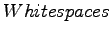

Nächste Seite: Query und QueryParser Aufwärts: Wichtige Komponenten Vorherige Seite: Document und Field Inhalt Index
Der Analyzer zerlegt zu indizierende Felder in Tokenstreams, damit diese dann ausgewertet werden können. Das kann beliebig komplex oder simple sein. Ein Analyzer kann z.B. speziell auf eine bestimmte Sprache ausgelegt sein um Artikel, Pronomen etc. direkt ausfiltern oder einfach anhand von  Token bilden. Als Nutzer von Lucene bestehen hier beliebig Möglichkeiten selbst zu erweitern um eigene Ansprüche zu erfüllen.
Genauso ist es möglich verschiedene Analyzer zu verbinden um unterschiedliche Felder auf unterschiedliche Weise zu zerlegen.